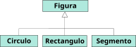
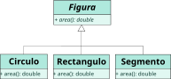
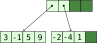
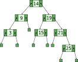
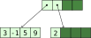
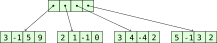
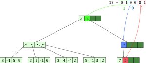
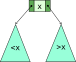
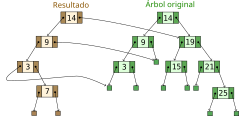

Tema 2
La versión 8 de Java (marzo de 2014) incorporó múltiples novedades en el lenguaje. Entre ellas, se proporcionó soporte para funciones anónimas (lambda expressions), y funciones de orden superior en la librería estándar.
Sin embargo, antes de esa versión, ya era posible implementar funciones de orden superior en Java.
En general, cualquier lenguaje orientado a objetos (con herencia y polimorfismo) permite el uso de orden superior.
mapIntentamos implementar la función map de Elixir en
Java, sin utilizar lambda expresiones.
¿Qué tipo tendría el
parámetro?
public List<Integer>
map(List<Integer> xs, tipo_función
f) {
var result = new ArrayList<Integer>();
for
(var x : xs) {
result.add(f(x)); ¿Cómo
llamaríamos a la función?
}
return
result;
}
IntFunction que represente a las funciones que reciben y
devuelven un valor de tipo entero:Esta interfaz tendrá un único método, llamado apply,
que definirá el comportamiento de la función que pasemos como parámetro
a map.
public interface IntFunction
{
int apply(int
x);
}
Ejemplos de funciones que implementan la interfaz
IntFunction:
class MultiplicarPorDos implements
IntFunction {
@Override
public
int apply(int x)
{
return x * 2;
}
}
class SumarUno implements
IntFunction {
@Override
public
int apply(int x)
{
return x + 1;
}
}
La definición de map queda del siguiente modo:
public List<Integer> map(List<Integer> xs,
IntFunction f) {
var
result = new ArrayList<Integer>();
for
(var x : xs) {
result.add(f.apply(x));
}
return
result;
}
Ejemplos de uso:
var l = Arrays.asList(4,
5, 1, 8, 10); // [4, 5, 1, 8, 10]
var dobles = map(l,
new
MultiplicarPorDos()); // [8, 10, 2, 16, 20]
var doblesMasUno =
map(dobles, new SumarUno());
// [9, 11, 3, 17, 21]
map admita funciones de
cualquier tipo (no necesariamente sobre enteros).public interface Function<T, S> { Tipo función T -> S
S apply(T
x);
}
public <T, S> List<S> map(List<T> xs, Function<T, S> f) {
var
result = new ArrayList<S>();
for
(var x : xs)
{
result.add(f.apply(x));
}
return
result;
}
class MultiplicarPorDos implements
Function<Integer, Integer> {
@Override
public
Integer apply(Integer x) {
return x *
2;
}
}
Nuestra solución anterior requiere definir una clase por cada función que se quiera pasar como parámetro.
Es posible definir clases anónimas en Java, mediante una sintaxis que define una clase y crea una instancia de esa clase al mismo tiempo.
var dobles = map(l, new Function<Integer, Integer>() {
@Override
public
Integer apply(Integer x) {
return x *
2;
}
});
Aun así, el código de una llamada a map sigue siendo
demasiado extenso.
Por este motivo, en Java 8 se introducen las lambda expresiones.
En Java, una interfaz funcional es una interfaz que declara un único método abstracto.
A las interfaces funcionales se las conoce como interfaces SAM (Single Abstract Method).
Ejemplo:
public interface Function<T, S> {
S apply(T x);
}
La sintaxis de una lambda expresión en Java es la siguiente:
(tipo1 param1, ..., tipon paramn) -> { cuerpo }
Ejemplos:
(int x) -> { return x + 1; }
(String x, String
y) -> {
System.out.printf("Concatenando
'%s' y '%s'", x, y);
return
x + y
}
Las expresiones lambda se evalúan a una instancia de una interfaz funcional. El cuerpo de la lambda expresión es la implementación del método abstracto.
Por ejemplo, si introducimos la siguiente lambda
expresión en un contexto en el que se espera un objeto de la clase
Function<String, Integer>,
(String s) -> { return Integer.parseInt(s); }
la lambda expresión es equivalente al siguiente código:
new Function<String, Integer>()
{ Clase
anónima
public Integer apply(String s) {
return Integer.parseInt(s);
}
}
Es posible omitir los tipos de los parámetros cuando se infieren del contexto:
(s) -> { return Integer.parseInt(s); }
Si el cuerpo de la lambda expresión es de la
forma return expresion; o es una llamada simple, es posible
omitir las llaves y el return:
(s) -> Integer.parseInt(s)
Si la lambda expresión tiene un solo parámetro, es posible omitir los paréntesis:
s -> Integer.parseInt(s)
En nuestro ejemplo anterior (map), las llamadas a
map pueden escribirse del siguiente modo:
var l = Arrays.asList(4,
5, 1, 8, 10);
var dobles = map(l,
(Integer x) -> { return x
* 2; });
var
doblesMasUno = map(dobles, (Integer x) -> {
return x + 1; });
o, más brevemente:
var l = Arrays.asList(4,
5, 1, 8, 10);
var dobles = map(l, x -> x * 2);
var doblesMasUno =
map(dobles, x -> x + 1);
A veces, las funciones que pasamos como parámetro ya están definidas:
public class Matematicas
{
public static Integer multiplicarDos(Integer x) {
return x *
2;
}
}
En ese caso, puede utilizarse una referencia a método:
var dobles = map(l, Matematicas::multiplicarPorDos);
Si C es una clase y m es un método
estático,
C::m equivale a x -> C.m(x)
Si o es una instancia y m es un
método,
o::m equivale a x -> o.m(x)
Si C es una case y m es un método no
estático,
C::m equivale a x -> x.m()
Si C es una clase,
C::new equivale a x -> new C(x)
var nombres = Arrays.asList("clara", "ricardo",
"manuel");
var
mayusculas = map(nombres, String::toUpperCase);
System.out.println(mayusculas); // ["CLARA", "RICARDO", "MANUEL"]
var nombresFicheros = Arrays.asList("dir1/hola.txt", "dir2/adios.java");
var
objetosFile = map(nombresFicheros, File::new);
var
dirPadres = map(objetosFile, File::getParent);
System.out.println(dirPadres); // ["dir1", "dir2"]
Además de la interfaz Function<T, S> definida
anteriormente, en la biblioteca estándar de Java existe un gran número
de interfaces predefinidas.
Se encuentran en el paquete java.util.function [+].
| Interfaz | Tipo funcional |
|---|---|
Function<T, S> |
T → S |
Predicate<T> |
T → boolean |
UnaryOperator<T> |
T → T |
| Interfaz | Tipo funcional |
|---|---|
Consumer<T> |
T → void |
Supplier<T> |
→ T |
BiFunction<T, S, U> |
(T, S) → U |
BinaryOperator<T> |
(T, T) → T |
BiPredicate<T, S> |
(T, S) → boolean |
BiConsumer<T, S> |
(T, S) → void |
Definimos una función filter, similar a la de
Elixir:
public <T> List<T> filter(List<T> xs, Predicate<T> f) {
var
result = new ArrayList<T>();
for
(var x : xs) {
if (f.test(x)) {
result.add(x); }
}
return result;
}
Definimos una función zipWith, similar a la de
Elixir:
public <T, S, R> List<R> zipWith(List<T> xs, List<S> ys,
BiFunction<T, S, R> f)
{
var result = new ArrayList<R>();
var itXs
= xs.iterator();
var itYs =
ys.iterator();
while (itXs.hasNext() &&
itYs.hasNext()) {
result.add(f.apply(itXs.next(),
itYs.next()));
}
return result;
}
forEachTodas las colecciones implementan un método forEach,
que realiza una determinada acción sobre todos los elementos de la
colección.
var x = Arrays.asList("a", "b", "c");
x.forEach(System.out::println);
El tipo de la función forEach es:
public interface Iterable<T>
{
// ...
public
void forEach(Consumer<T> action); Consumer<T> = T ->
void
// ...
}
TEn realidad, el tipo de forEach es el siguiente:
public interface Iterable<T>
{
// ...
public
void forEach(Consumer<? super T>
action);
// ...
}
Es decir, la función action pasada como parámetro
puede recibir valores que sean supertipos de T.
Por simplicidad, ignoraremos las anotaciones de covarianza
(? extends T) o contravarianza
(? super T).
Stream<T>Definida en el paquete java.util.stream.
Define una colección de elementos, al igual que
List<T>, Set<T>, etc.
Los streams son perezosos.
Documentación: [+]
Stream<T>map(Function<T, S> f)Aplica la función f a los elementos y devuelve otro
stream con los resultados.
flatMap(Function<T, Stream<S>> f)Aplica la función f a los elementos y devuelve el
resultado de concatenar los resultados.
concat(Stream<T> s1, Stream<T> s2)Concatena los streams pasados como parámetro.
filter(Predicate<T> f)Devuelve un stream con los elementos que satisfacen el predicado.
limit(int n)Devuelve un stream con los n primeros elementos
de this. (≈ Enum.take/2 en
Elixir)
skip(int n)Descarta los n primeros elementos de this.
(≈ Enum.drop/2 en Elixir)
takeWhile(Predicate<T> f)Devuelve un stream con los elementos de this
hasta el primero que no cumpla la condición f.
dropWhile(Predicate<T> f)Devuelve un stream con los elementos de this
desde el primero que no cumpla la condición f.
distinct()Elimina los duplicados del stream.
sorted()Devuelve un stream ordenado.
Stream<T>count() → intDevuelve el número de elementos del stream.
findFirst() → Optional<T>Devuelve el primer elemento del stream (si existe).
reduce(T acIni, BinaryOperator<T> f) →
TPropaga un valor acumulador a lo largo del stream y devuelve el valor final del acumulador.
allMatch(Predicate<T> f) →
booleanComprueba si la función f devuelve true
para todos los elementos del stream. (≈ Enum.all?/2 en Elixir)
anyMatch(Predicate<T> f) →
booleanComprueba si la función f devuelve true
para algún elemento del stream. (≈
Enum.any?/2 en Elixir)
toList() → List<T>Crea una lista con los elementos del stream.
toArray() → Array<T>Crea un array con los elementos del stream.
collect(Collector c)Acumula los elementos del stream en otra colección de elementos. (≈ Enum.into/2 en Elixir)
var nums = Arrays.asList(10, 3, -2, 5, 1, 9, 10);
int result =
nums.stream()
.filter(x -> x >= 0)
.map(x -> x * 2)
.reduce(0, Integer::sum);
System.out.println(result); // Imprime: 76
Stream<T>Todas las colecciones de la biblioteca estándar tienen un método
.stream() que permiten obtener un stream con los
elementos de la colección.
Además, existen métodos estáticos en la clase
Stream<T> que permiten crear
streams.
of(T... values)Crea un stream con los valores indicados.
generate(Supplier<T> f)Crea un stream infinito, llamando repetidamente a la función
f. (≈ Stream.repeatedly/1 en
Elixir)
iterate(T seed, UnaryOperator<T> f)Crea un stream infinito, comenzando por el valor
seed, seguido por los resultados de aplicar f
repetidamente sobre ese valor. (≈
Stream.iterate/2 en Elixir)
Imprimir los diez primeros números de la sucesión de Fibonacci:
Stream.iterate(new Pair<>(0, 1),
p -> new Pair<>(p.second(),
p.first() +
p.second()))
.map(Pair::first)
.limit(10)
.forEach(System.out::println);
donde Pair está definido del siguiente modo:
record Pair<T, S>(T first, S second) { }
collectcollectEs habitual querer almacenar los elementos de un stream en una colección de elementos.
El método collect es similar a reduce,
pero está especializado en transformar un stream en otra
colección.
class Stream<T> {
// R = Tipo de la colección
generada.
public <R> R collect(Supplier<R>
supplier,
BiConsumer<R, T>
accumulator,
BiConsumer<R, R> combiner);
// ...
}
// (R = Tipo de la colección generada; T = tipo
de elementos del stream)
public <R> R
collect(Supplier<R>
supplier, () ->
R
BiConsumer<R, T> accumulator, (R, T) ->
void
BiConsumer<R, R> combiner); (R, R) -> void
supplier()Crea una instancia vacía de la colección a generar.
accumulator(r, t)Añade el elemento t a la colección r.
combiner(r1, r2)Combina dos colecciones en una. Añade los elementos de
r2 a r1.
List<Integer> result =
Stream.iterate(1, x -> x * 2)
.limit(15)
.collect(() ->
new ArrayList<>(), supplier
(xs,
x) -> xs.add(x), accumulator
(xs,
ys) -> xs.addAll(ys)); combinator
o, equivalentemente,
List<Integer> result =
Stream.iterate(1, x -> x * 2)
.limit(15)
.collect(ArrayList::new,
ArrayList::add,
ArrayList::addAll);
CollectorsCollector.toList()Devuelve un colector que almacena los resultados en una lista.
toMap(Function<T, K> f, Function<T, V> g)Devuelve colector que almacena los resultados en un
Map<K, V> donde los pares (clave, valor)
provienen de aplicar las funciones f y g a los
elementos del stream.
joining(String delimiter)Devuelve un colector que concatena los elementos, separados por un delimitador
String str =
Stream.of("Marta", "Gerardo",
"Diana")
.map(String::toLowerCase)
.map(s ->
s + ".txt")
.collect(Collectors.joining(" / "));
// "marta.txt / gerardo.txt / diana.txt"
groupingBy(Function<T, K> classifier)Devuelve un colector que construye un diccionario aplicando a cada
elemento la función classifier.
Stream.of("Marta", "Gerardo", "Diana",
"Carlos", "David", "Águeda")
.collect(Collectors.groupingBy(String::length));
se evalúa al siguiente diccionario:
| Clave | Valor |
|---|---|
| 5 | [Marta, Diana, David] |
| 6 | [Carlos, Águeda] |
| 7 | [Gerardo] |
finalfinalUna manera de forzar la inmutabilidad en Java es declarando las
variables como final.
Las variables final, una vez inicializadas, no
pueden ser modificadas.
final int y =
3;
y = 4; Error:
variable no modificable
Las variables final pueden inicializarse después de
su definición.
final int
x;
if (args.length > 1) {
x = 3;
}
else {
x = 5;
}
El ejemplo anterior podría haberse expresado del siguiente modo:
final int x = args.length > 1 ? 3 : 5;
final en clasesfinal dentro de las
clases. Pueden ser ser inicializados en la declaración, o en el
constructor.public class Punto
{
private final int x;
private final int
y;
public Punto(int
x, int y) {
this.x = x;
this.y =
y;
}
public setX(int x) {
this.x = x; Error: reasignando variable
final
}
//...
}
finalEl modificador final prohibe cambiar el valor de la
variable, pero no prohibe mutar el objeto apuntado por esa variable.
final int[] arr =
new int[] { 1, 3, 10, 23 };
arr =
new int[] { 10, 20, 30 }; Incorrecto: no se puede cambiar
arr
arr[2] = 1; ...pero sí se puede cambiar el array
apuntado por arr
final var ls =
new ArrayList<Integer>();
ls.add(10); Correcto
ls.add(20); Correcto
ls =
Arrays.asList(-4, 1, 4, 7); Incorrecto
Para poder disponer de inmutabilidad completa, hemos de asegurar que los tipos de los atributos y las variables sean inmutables.
En particular:
Los objetos String son inmutables.
Las listas devueltas por List.of(...) o por
Arrays.asList(...) son inmutables.
Los diccionarios devueltos por Map.of(...) son
inmutables.
Mediante librerías externas, podemos tener colecciones de datos inmutables.
Las colecciones de la biblioteca estándar de Java
(List, Map, Set, etc.) definen
métodos cuya finalidad es mutar la colección sobre la que se aplican.
Por ejemplo:
void List<T>.add(T elem)void Map<K, V> put(K key, V value)Algunas de las implementaciones de esta interfaz se consideran inmutables, en el sentido en el que prohiben las llamadas a las operaciones mutadoras.
Una estructura de datos persistente es inmutable, pero no prohíbe las llamadas a operaciones mutadoras.
Una llamada a una operación mutadora devuelve una copia de la estructura original, de modo que es posible acceder tanto a la estructura original como a la resultante de la operación.
La copia realizada puede tener compartición de elementos con la estructura original, por motivos de eficiencia.
java-immutable-collectionshttp://brianburton.github.io/java-immutable-collections/
Es una biblioteca de Java que proporciona implementaciones de estructuras persistentes.
IDeque: colas doblesIList: listasIMap: diccionariosISet: conjuntosIDequevar d1 = IDeques.of(1,
5, 10);
var d2 = d1.insert(20).insertFirst(-3);
// d1 = [1,5,10],
d2 = [-3,1,5,10,20]
var d3 =
d2.deleteFirst().deleteFirst().deleteLast();
// d2 = [-3,1,5,10,20], d3 = [5,10]
IListListas implementadas mediante árboles binarios equilibrados.
Permiten inserciones/borrados al principio, al final y en mitad.
Coste operaciones: \(O(\log~n)\), con \(n\) el tamaño de la lista.
var i1 = ILists.of(1,
30, 5, 9);
var i2 = i1.assign(1, 20);
// i1 = [1,30,5,9], i2 =
[1,20,5,9]
var i3 = i2.delete(2);
// i2 = [1,20,5,9],
i3 = [1,20,9]
ISetConjuntos implementados mediante:
Hashmapped array tries, si se crean mediante
ISets.hashed()
Coste de las operaciones: \(O(\log_{32} n)\), donde \(n\) es el tamaño del conjunto.
Árboles binarios de búsqueda equilibrados, si se crean mediante
ISets.sorted()
Coste de las operaciones: \(O(\log~n)\), donde \(n\) es el tamaño del conjunto.
var s1 = ISets.sorted(10, 5, 3, 20);
var s2 = s1.insert(4).delete(20);
// s1 =
{3,5,10,20}, s2 =
{3,4,5,10}
System.out.println(s1.contains(20)); //
true
System.out.println(s2.contains(20)); // false
IMapISet, pero para almacenar diccionarios en
lugar de conjuntos.var d = IMaps.hashed().assign("Pepe", 32).assign("Maria",
25);
System.out.println(d.get("Pepe")); // 32
System.out.println(d.getValueOr("NoExiste", -1)); // -1
recordEn programación orientada a objetos, es posible representar un tipo producto mediante una clase.
Tradicionalmente, en POO las clases no solo sirven para almacenar datos, sino también para implementar operaciones que mutan esos datos.
Sin embargo, en programación funcional, los tipos de datos se definen de manera separada de las operaciones.
public class Fecha {
// Atributos
private final int
dia;
private final int mes;
private final int
anyo;
//
Constructor
public Fecha(int dia, int mes, int anyo) { ... }
// Métodos de acceso
public
int getDia()
{ ... }
public int
getMes() { ... }
public int getAnyo() { ... }
}
¡Cuánto código para un tipo tan simple!
public record Fecha(int dia, int mes, int anyo) { }
Define una clase Fecha con tres
atributos.
final, aunque no se
indique explícitamente.Dentro de la declaración de un
record (entre { y }):
Se pueden definir métodos.
No se pueden definir nuevos atributos.
Un record puede implementar
interfaces, pero no extender clases.
public record Fecha(int dia, int mes, int anyo) { }
En un record se generan automáticamente:
Fecha(int dia, int mes, int anyo)dia(), mes(),
anyo()toString()equals()hashCode()var f1 = new Fecha(15, 3, 1979);
var f2 =
new Fecha(15, 3, 1979);
System.out.println(f1); Uso de
toString()
// Imprime:
Fecha[dia=15, mes=3, anyo=1979]
if
(f1.equals(f2)) { Uso de
equals()
System.out.println("Las fechas son
iguales");
}
var dias = Stream.of(f1,
f2)
.map(Fecha::dia) Uso de método
dia()
.toList();
System.out.println(dias);
// Imprime: [15, 15]
public record Fecha(int dia, int mes, int anyo) {
@Override
public
String toString()
{
return String.format("%02d/%02d/%04d",
this.dia, this.mes,
this.anyo);
}
}
public record Fecha(int dia, int mes, int anyo) {
// Si
modificamos el constructor canónico, no hace falta definir
los
// parámetros. Tampoco hace falta
asignar los atributos dia, mes
y
// anyo, a menos que
queramos modificarlos.
public Fecha
{
if (mes < 1 ||
mes > 12) {
throw
new RuntimeException("Mes no
válido: " + mes);
}
}
// Constructor alternativo: delega en el constructor
canónico
public Fecha(int anyo) {
this(0, 0,
anyo);
}
}
Como los atributos de un record son
final, no se generan setters.
No obstante, podemos añadir métodos
with para generar copias de objetos, modificando algún
atributo:
public record Fecha(int dia, int mes, int anyo) {
//
...
public Fecha withDia(int dia) {
return
new Fecha(dia, this.mes, this.anyo);
}
}
var f1 = new Fecha(15, 3, 1979);
var f3 =
f1.withDia(f1.dia() + 1);
System.out.println(f3); // 16/03/1979
Biblioteca para la creación de clases que representan objetos inmutables.
Utiliza los procesadores de anotaciones de Java para generar automáticamente código.
En lenguajes orientados a objetos, se puede modelizar un tipo unión utilizando herencia:


Figurapublic interface Figura
{
double area();
}
Rectangulopublic record Rectangulo(Punto
centro, double ancho, double alto)
implements
Figura {
@Override
public
double area() {
return
ancho * alto;
}
}
Circulopublic record Circulo(Punto centro,
double radio) implements
Figura {
@Override
public
double area() {
return
Math.PI * radio * radio;
}
}
Segmentopublic record Segmento(Punto
origen, Punto destino) implements Figura {
@Override
public
double area() {
return
0;
}
}
Consiste en implementar las operaciones de un tipo unión fuera de la jerarquía, y distinguir casos según la alternativa del tipo unión.
Es decir, hacer algo similar a lo que hacíamos en Elixir:
def area(%Rectangulo{} = r),
do: r.alto *
r.ancho
def area(%Circulo{} = c),
do: :math.pi() * c.radio *
c.radio
def area(%Segmento{}),
do: 0
La implementación en Java queda del siguiente modo:
public static double area(Figura f) {
if (f
instanceof Rectangulo) {
Rectangulo r = (Rectangulo)
f;
return r.alto() * r.ancho();
}
else if (f instanceof Circulo)
{
Circulo c = (Circulo) f;
return Math.PI
* c.radio() * c.radio();
} else { // Segmento
return 0;
}
}
if–else if–else if.
instanceof con ajuste de patrones (Java 18)Es posible realizar la comprobación de tipos y declarar una variable del tipo correspondiente en un único paso:
public static double area(Figura f) {
if (f
instanceof Rectangulo r) { r es de tipo
Rectangulo
return r.alto() *
r.ancho();
} else if (f
instanceof Circulo c) { c es de tipo
Circulo
return Math.PI *
c.radio() * c.radio();
} else { // Segmento
return 0;
}
}
r y c son los
de las ramas del if correspondientes.switch (Java 17)switch ha existido en Java desde los
inicios del lenguaje, pero no como expresión, sino como sentencia:int diaSemana = ...;
String diaStr =
null;
switch(diaSemana) {
case
0:
diaStr = "LUNES";
break;
case
1:
diaStr = "MARTES";
break;
...
case
6:
diaStr = "DOMINGO";
break;
}
Es posible utilizar switch como expresión:
int diaSemana = ;
String diaStr = switch(diaSemana)
{
case 0 -> "LUNES";
case
1 -> "MARTES";
...
case
6 -> "DOMINGO";
default ->
null;
};
Tras cada case se coloca una flecha
(->) en lugar de dos puntos (:).
Al lado derecho de cada -> se coloca una
expresión.
Es necesario un caso default (salvo
excepciones).
case:enum Mes { ENERO, FEBRERO, MARZO, ABRIL, MAYO,
JUNIO, JULIO,
AGOSTO, SEPTIEMBRE, OCTUBRE, NOVIEMBRE,
DICIEMBRE };
static int numDias(Mes m, boolean esBisiesto)
{
return switch(m)
{
case Mes.FEBRERO -> esBisiesto ? 29 : 28;
case Mes.ABRIL, Mes.JUNIO, Mes.SEPTIEMBRE, Mes.NOVIEMBRE
-> 30;
default -> 31;
};
}
enum no es necesaria una rama default.switch es posible
escribir sentencias, siempre que contengan un yield que
indique la expresión a devolver en esa rama del
switch:static int numDias(Mes m,
int anyo) {
return
switch(m) {
case Mes.FEBRERO
-> { Bloque de
sentencias entre { y }
boolean
esBisiesto = comprobarBisiesto(anyo);
if
(esBisiesto) {
yield 29;
} else
{
yield 28;
}
}
//
...
};
}
switch como
alternativa a instanceofLas expresiones switch permiten distinguir casos
según el tipo del discriminante:
public static double area(Figura f)
{
return switch(f)
{
case Rectangulo r
-> r.ancho() * r.alto();
case Circulo c -> Math.PI * c.radio() *
c.radio();
case Segmento
_ -> 0; Variable anónima:
_
default -> throw
RuntimeException("Área no
definida");
};
}
default?En una expresión switch, la
distinción de casos ha de ser exhaustiva.
La interfaz Figura solamente tiene
tres clases: Rectangulo, Circulo y
Segmento.
Figura, incluso en otros
módulos.¿Cómo podemos prohibir nuevas subclases en Figura, aparte de las que hemos definido nosotros?
sealed)Una clase sellada (sealed) no puede ser extendida, salvo por algunas clases autorizadas.
En la definición de la clase sellada se indican aquellas clases que están autorizadas a extenderla.
El mismo concepto se aplica a las interfaces.
public sealed interface
Figura
permits
Rectangulo, Circulo, Segmento { Herederas
autorizadas
//...
}
Como el tipo Figura está sellado y solamente puede
tener tres alternativas, ya no es necesario el caso default
en el switch, porque la distinción es exhaustiva.
public static double area(Figura f) {
return
switch(f) {
case Rectangulo r
-> r.ancho() * r.alto();
case Circulo c ->
Math.PI * c.radio() * c.radio();
case Segmento _
-> 0;
};
}
switchSi las clases sobre las que se hace ajuste son
records, es posible colocar los atributos de las clases en
el case:
public static double area(Figura f) {
return
switch (f) {
case
Rectangulo(Punto _, double ancho, double alto) -> ancho *
alto;
case Circulo(Punto _, double radio) -> Math.PI * radio *
radio;
case Segmento(Punto _, Punto _) ->
0;
};
}
También se puede utilizar inferencia de tipos (var)
en los patrones:
public static double area(Figura f) {
return
switch (f) {
case
Rectangulo(var _, var ancho,
var alto) -> ancho *
alto;
case Circulo(var _,
var radio) -> Math.PI * radio *
radio;
case Segmento(var _,
var _) -> 0;
};
}
Se permiten guardas (mediante when) en los
patrones:
static boolean esHorizontal(Figura f)
{
return switch (f)
{
case Segmento(Punto(var _,
var y1),
Punto(var _, var
y2)) when y1 == y2 -> true;
default
-> false;
};
}
| Java | Elixir | |
|---|---|---|
| Extensibilidad horizontal | Clases sealed + switch |
Ajuste de patrones |
| Extensibilidad vertical | Herencia + métodos abstractos |
Protocolos |
Optional<T>nullLa forma tradicional de denotar ausencia de valores en Java es el
uso de null.
get() de los diccionarios
devuelve null si no hay ningún valor asociado a la clave
indicada.El uso de null para denotar ausencia de valores es
problemático [+]
Map<Integer, String> dicc;
//
...
int long = dicc.get(3).length();
//
NullPointerException si dicc no contiene la clave 3
Optional<T>Definida en paquete java.util
Define el tipo unión option explicado anteriormente [+].
Las instancias de Optional<T> pueden contener
un objeto de tipo T o no contener ninguno.
El método isPresent() determina si una instancia de
Optional<T> contiene un objeto o no.
El método get() permite obtener el objeto contenido
dentro del Optional<T>, si existe.
Optional<T> no contiene
objeto.Si utilizamos Optional<T>, el
sistema de tipos nos avisa cuando estamos accediendo a un valor
potencialmente nulo.
Por ejemplo, supongamos que el método
get() de la clase Map<K, V> estuviera
definido del siguiente modo:
public interface Map<K, V>
{
// ...
Optional<V> get(K
key);
}
El siguiente fragmento de código no compilaría:
Map<Integer, String> dicc;
//
...
v|| Error: dicc.get(3)
es de tipo Optional<[String]{.type}>
||
int longitud = dicc.get(3).length();
En su lugar, deberíamos comprobar si el objeto está presente y determinar qué hacer cuando no lo esté.
Map<Integer, String> dicc;
//
...
var optStr = dicc.get(3);
int longitud =
optStr.isPresent() ? optStr.get().length() : 0;
Optional<T>Optional.of(T valor)Construye un Optional<T> con el valor indicado,
siempre que sea distinto de null.
Optional.ofNullable(T valor)Construye un Optional<T> con el valor indicado.
Construye un Optional<T> vacío si el valor pasado es
null.
Optional.empty()Construye un Optional<T> vacío.
Volviendo a la interfaz original de Map (aquella en
la que get() devuelve null cuando la clave a
buscar no existe):
Map<Integer, String> dicc;
//
...
var optStr =
Optional.ofNullable(dicc.get(3));
int longitud = optStr.isPresent() ?
optStr.get().length() : 0;
map, flatMap y
orElseclass Optional<T> {
// ...
public
Optional<U> map(Function<T, U>
f);
public Optional<U> flatMap(Function<T, Optional<U>>
f);
public T orElse(T other);
}
isPresent().Partimos del siguiente código:
int longitudPrimero(Map<Integer, TreeSet<String>> dicc) {
var
optSet = Optional.ofNullable(dicc.get(3));
if (optSet.isPresent())
{
var optStr =
Optional.ofNullable(optSet.get().pollFirst());
return
optStr.isPresent() ? optStr.get().length() : 0;
} else
{
return 0;
}
}
orElseOptional<T>.orElse(T other) --> T
Obtiene un objeto de tipo T a partir de un
Optional<T>.
Optional<T> está vacío, devuelve el valor
other.Optional<T>.Sirve para abreviar expresiones como la siguiente:
opt.isPresent() ? opt.get() : valor_defecto
// equivale a
opt.orElse(valor_defecto)
mapOptional<T>.map(Function<T, U> f) --> Optional<U>
Transforma un Optional<T> en un
Optional<U>:
Si el Optional<T> sobre el que se aplica está
vacío, devuelve un Optional<U> vacío.
Si contiene un valor, devuelve un Optional<U>
cuyo contenido es el resultado de aplicar f sobre dicho
valor.
Si f devuelve null, devuelve un
Optional<U> vacío.
Sirve para abreviar expresiones como la siguiente:
opt.isPresent() ? f(opt.get()) : Optional.empty()
// equivale a
opt.map(f)
En lugar de:
int longitudPrimero(Map<Integer, TreeSet<String>> dicc) {
var
optSet = Optional.ofNullable(dicc.get(3));
if (optSet.isPresent())
{
var optStr =
Optional.ofNullable(optSet.get().pollFirst());
return
optStr.isPresent() ? optStr.get().length() : 0;
} else { /* ... */
}
}
Podemos escribir:
int longitudPrimero(Map<Integer, TreeSet<String>> dicc) {
var
optSet = Optional.ofNullable(dicc.get(3));
if (optSet.isPresent())
{
var optStr =
Optional.ofNullable(optSet.get().pollFirst());
return
optStr.map(String::length).orElse(0);
} else { /* ...
*/ }
}
pollFirst puede simplificarse mediante
map:int longitudPrimero(Map<Integer, TreeSet<String>> dicc) {
var
optSet = Optional.ofNullable(dicc.get(3));
if (optSet.isPresent())
{
return optSet.map(TreeSet<String>::pollFirst)
.map(String::length).orElse(0);
} else {
return 0;
}
}
optSet:int longitudPrimero(Map<Integer, TreeSet<String>> dicc) {
return
Optional.ofNullable(dicc.get(3))
.map(TreeSet<String>::pollFirst)
.map(String::length)
.orElse(0);
}
Listas enlazadas
Bitmapped Vector Tries

Árboles binarios de búsqueda equilibrados

En la mayoría de lenguajes funcionales, las listas son un tipo unión que resulta de aplicar reiteradamente un constructor de listas.
Una lista puede ser:
Vacía
[] en Haskell y [] en
Elixir
No vacía, con cabeza x y cola xs
(x:xs) en Haskell y [x|xs] en Elixir
A
este constructor de listas se le denomina
cons.
public sealed
interface IList<T> permits
Empty, Cons { }
record Empty<T>()
implements IList<T> {
}
record Cons<T>(T head, IList<T> tail)
implements IList<T> { }
default dentro de la interfaz
IList<T>.default int length()
{
return switch (this)
{
case Empty<T> _ -> 0;
case Cons<T> v
-> 1 +
v.tail().length();
};
}
default IList<T> append(IList<T> other)
{
return switch (this)
{
case Empty<T> _ ->
other;
case Cons<T> v ->
new Cons<>(v.head(),
v.tail().append(other));
};
}
La concatenación de listas genera una copia de la lista
this:
var xs = IList.of(1,
5);
var ys =
IList.of(6, 9,
-3);
var zs =
xs.append(ys);
La búsqueda del elemento n-ésimo de una lista
requiere recorrer todos los anteriores:
default T at(int n)
{
return switch (this)
{
case Empty<T> _ -> throw
new
IndexOutOfBoundsException();
case Cons<T>
_ when n < 0 -> throw
new
IndexOutOfBoundsException();
case Cons<T>
v when n == 0 ->
v.head();
case Cons<T> v ->
v.tail().at(n - 1);
};
}
mapdefault <U> IList<U> map(Function<T, U> f)
{
return switch (this)
{
case Empty<T> _ ->
new Empty<>();
case
Cons<T> v -> new
Cons<>(f.apply(v.head()), v.tail().map(f));
};
}
forEachdefault void forEach(Consumer<T> f) {
if
(this instanceof Cons<T>(T head, IList<T> tail))
{
f.accept(head);
tail.forEach(f);
}
}
reducedefault <R> R reduce(R ini, BiFunction<T, R, R> f)
{
return switch (this)
{
case Empty<T> _ ->
ini;
case Cons<T> v ->
v.tail().reduce(f.apply(v.head(), ini), f);
};
}
reduceRightdefault <R> R reduceRight(R ini, BiFunction<T, R, R> f)
{
return switch (this)
{
case Empty<T> _ ->
ini;
case Cons<T> v ->
f.apply(v.head(), v.tail().reduceRight(ini, f));
};
}
append y length
utilizando las funciones reduce:default int length()
{
return this.reduce(0, (x, l) -> l + 1);
}
default IList<T> append(IList<T> other)
{
return this.reduceRight(other,
Cons<T>::new);
}
| Coste | |
|---|---|
Cons(x, xs) |
\(O(1)\) |
xs.head() |
\(O(1)\) |
xs.last() |
\(O(xs)\) |
xs.length() |
\(O(xs)\) |
xs.append(ys) |
\(O(xs)\) |
xs.at(i) |
\(O(i)\) |
Es una estructura de vectores enlazados jerárquicamente.
Los vectores tienen una longitud fija \(K\) tal que \(K = 2^n\) para algún \(n\).
Normalmente se utiliza \(K = 32\).
En estas diapositivas, utilizamos \(K = 4\) por motivos de presentación.

Si llenamos el segundo vector, añadimos un tercero, y así sucesivamente.
Esto nos permite tener hasta 16 elementos.

Para acceder al elemento i-ésimo,
obtenemos una representación de bits del índice i y
formamos paquetes de \(\log~K\)
bits.
Por ejemplo: posición i = 17.
La secuencia de paquetes nos indica el camino que debemos seguir desde el vector «raíz» hasta el elemento correspondiente.

\(n\) = tamaño de la lista
| Coste | |
|---|---|
| Añadir por el final | \(O(log_K~n)\) |
| Añadir por el principio | \(O(n)\) |
Modificar el valor i-ésimo |
\(O(log_K~n)\) |
Acceder a elemento i-ésimo |
\(O(log_K~n)\) |
Con 1 billón de elementos (casi 4 TB de memoria) y \(K = 32\), el árbol tendría profundidad 8.
Los costes \(O(log_K~n)\) son \(O(1)\) en la práctica
Son útiles para implementar conjuntos y diccionarios.
Pueden implementarse mediante tipos unión:
public sealed
interface ISet permits Empty, Node {
/.../ }
record Empty()
implements ISet { }
record
Node(int elem, ISet left, ISet right)
implements ISet { }

T, ese tipo
tendría que implementar la interfaz
Comparable<T>.public sealed
interface ISet<T extends Comparable<T>>
permits Empty, Node { /.../
}
record Empty<T extends
Comparable<T>>() implements ISet<T> {
}
record Node<T
extends Comparable<T>>(T elem,
ISet<T> left,
ISet<T> right)
implements ISet<T> { }
default boolean contains(int x)
{
return switch (this)
{
case Empty _ ->
false;
case Node v when x == v.elem() ->
true;
case Node v when x < v.elem() ->
v.left().contains(x);
case Node v ->
v.right().contains(x);
};
}
default ISet add(int x)
{
return switch (this)
{
case Empty _ -> new Node(x, new Empty(),
new Empty()); Nuevo nodo
case
Node v when v.elem() == x -> this;
case Node
v when x < v.elem() ->
new
Node(v.elem(), v.left().add(x), v.right());
case
Node v ->
new Node(v.elem(), v.left(),
v.right().add(x));
};
}
7 en el siguiente
árbol:

Necesitamos un método auxiliar removeLowest, que
devuelve el resultado de eliminar el nodo con menor
valor en un árbol binario de búsqueda.
Devuelve:
Definimos el valor de retorno de removeLowest
mediante un tipo record:
record RemoveLowestResult(int lowest, ISet result) { }
private RemoveLowestResult removeLowest()
{
return switch (this)
{
case Empty _ ->
throw
new RuntimeException("RemoveLowest
en árbol vacío");
case
Node(var elem, Empty(), var r) ->
new RemoveLowestResult(elem,
r);
case Node(var elem,
var l, var r) ->
{
var leftResult =
l.removeLowest();
yield new
RemoveLowestResult(leftResult.lowest(),
new Node(elem,
leftResult.result(), r));
}
};
}
default ISet remove(int x)
{
return switch (this)
{
// Si el elemento a borrar no se
encuentra en el árbol, devolvemos el
// mismo árbol
case Empty
_ -> this;
// Si el elemento a
borrar se encuentra en el árbol, y su hijo derecho
// está vacío, devolvemos el hijo
izquierdo.
case Node v when v.elem() == x
&& v.right().isEmpty() -> v.left();
// Caso análogo al
anterior.
case Node v when v.elem() == x
&& v.left().isEmpty() -> v.right();
// Si el elemento a borrar tiene dos hijos no vacíos,
eliminamos el
// menor valor del
hijo derecho, que será la nueva
raíz.
case Node v when v.elem() ==
x -> {
var rightResult =
v.right().removeLowest();
yield new
Node(rightResult.lowest(), v.left(),
rightResult.result());
}
//
...continúa...
//
...continuación...
// Si el
elemento a borrar no es la raíz, buscamos en el hijo
// izquierdo o derecho, según
corresponda.
case Node v when x <
v.elem() ->
new Node(v.elem(),
v.left().remove(x), v.right());
case Node v
->
new Node(v.elem(), v.left(),
v.right().remove(x));
};
}
La implementación mostrada anteriormente puede dar lugar a árboles desequilibrados.
Existen implementaciones que reequilibran el árbol cada vez que se realiza una operación de inserción o borrado.
Coste en espacio y tiempo, suponiendo árboles equilibrados
\(n\) es el número de elementos del conjunto.
| Coste tiempo | Coste espacio | |
|---|---|---|
| Búsqueda | \(O(log~n)\) | \(O(1)\) |
| Inserción | \(O(log~n)\) | \(O(log~n)\) |
| Borrado | \(O(log~n)\) | \(O(log~n)\) |